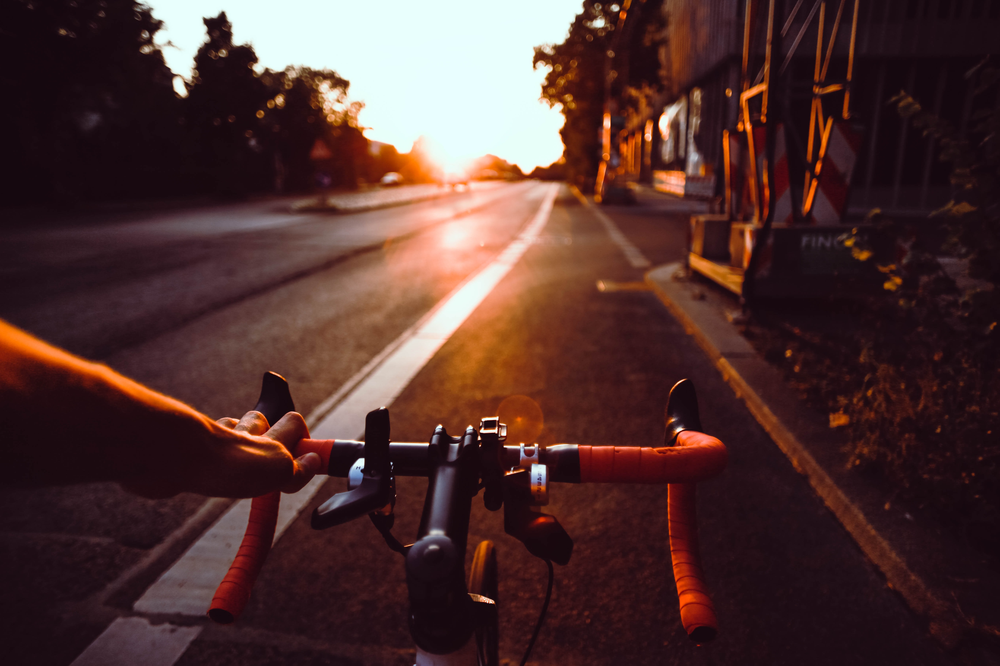

Remember the first time you gazed through the night sky filled with twinkling stars? Perhaps, you were a little child lying on your Dadi’s lap, listening to lovely stories as you gazed your way through the abyss. Or perhaps it was the time when you gazed outside the car window as your Papa drove swiftly on the road.
Photo by Vincentiu Solomon on Unsplash
Remember the first time you rode your bicycle? The feelings that you felt- feelings of excitement, alertness, nervousness, and especially the feeling when you felt you got it as you peddled your way through the road shouting Yoohooooo!!
 Photo by Flo Karr on Unsplash
There is something magical about our first times. First time doing or experiencing something.
This is my first time blogging! Amongst the plethora of feelings that I am feeling right now, are nervousness and excitement. Nervous because I do not know what to write and I do not know how this would all turn up in the end. Excited because I think this can be the start of something great!
I opened this draft, had a sip of tea, placed my hands on the keyboard, and thought about what to write. Then all of this sort of came naturally to me. Lucky me!
I guess Khaled Hosseini was right when he said that he would sit at his writing desk and wish for something magical to happen!
The first time I realized that I had a knack for writing(or maybe I don’t) was when I was in high school, in 10th grade. There was this English test that had a letter-writing section, and if I remember correctly the theme was something around “Write a letter to the MLA about helping orphans”. One thing I clearly remember about writing that letter, although it was for a test, was that I captured the pain and emotions of orphans and poured it out. For me, it felt real. I even thought of writing an actual letter later and sending it to my local MLA to help out the orphans in my locality. Anyways, after we handed over our test papers, I got feedback from my English teacher who was amazed by what I wrote. She was impressed by my writing style and the depth of my clarity. That sort of stayed with me. I never got a chance to actually write something meaningful for the next some years until I entered college. During those years, I used to volunteer at an NGO on Sundays as an education volunteer teaching kids from slum areas Math & English. During one of those times, I had written a post that captured the feelings of those kids when we the volunteers would come and meet them every Sunday. I wrote it and shared it with my co-volunteers. They all loved it! That is when I got a sense of self-awareness that there is a writer that is hidden inside me.
I am starting this blog platform to allow myself to be that writer. I do not wish to get fame or anything, but I just want to write my heart out!
One of the things that scare me to hell is when I die and I am in my grave, my tombstone shouldn’t say “A writer buried with his words”.
So this is the beginning of my journey to do something that I love, to do something that makes me happy, to do something that makes me feel at home, to do something for the sake of its beauty, to do something for the sake of my passion- to write! And I invite you as well my friend, to start doing what your heart has been saying to you for all these years.
“It is never too late to be what you might have been” - George Elliot
See ya around!